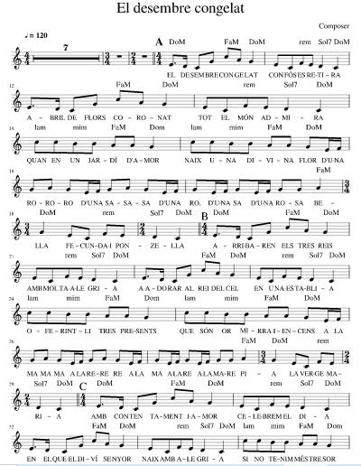

|
|
【天使向童貞女顯現】 |
|
1 To a virgin meek and mild
|
聖潔天使奉差遺向童貞女顯現，
|
|
 https://musescore.com/user/30858201/scores/5905169
|
|
|
|
|


El Desembre Congelat (TB Choir) - Arranged by Russell Robinson https://youtu.be/3gWT6cf6KpE -
Lo desembre congelat (Remasterizado) · Bola de Nieve
https://youtu.be/vNM6GOkUZKA
| Text: | To a Virgin Meek and Mild |
| Author: | Vigleik E. Boe |
| Author: | Oscar Overby |
| Tune: | LO DESEMBRE CONGELAT |
| Arranger: | Donald P. Hustad |
| Short Name: | Vigleik E. Boe |
| Full Name: | Boe, Vigleik E., 1872-1953 |
| Birth Year: | 1872 |
| Death Year: | 1953 |
Tune Information
| Title: | LO DESEMBRE CONGELAT |
| Meter: | Irregular |
| Incipit: | 32151 65314 32132 |
| Key: | D Major |
| Source: | Spanish carol |
| Copyright: | Public Domain |
Short Name:Don Hustad
Full Name:Hustad,
Don
Birth Year:1918Death
Year:2013

Vigleik 1872-1953
Vigleik was born in 1872. He is the son of Engebret Engebretsson and Kristie Skare. He lived in Skaanevik with his father up until 1892, when he came to America he went straightly to Nerstrand, MN to live with his Aunt Mrs. Valgjer Olson. at this time he became a member of the Vang congregation at the (sic) church.

When Reverend Vigleik Enebretson Boe was born on 30 March 1872, in Hildal, Hordaland, Norway, his father, Ingebrigt Ingebrigtsen Boe, was 32 and his mother, Kristi Vigleiksdtr Hildal Skare, was 32. He married Maria Haugen on 23 December 1899. They were the parents of at least 3 sons and 3 daughters. He lived in Richmond, Richmond, New York, United States in 1910 and Finley, Steele, North Dakota, United States for about 20 years. He died on 8 June 1953, in Goodhue, Minnesota, United States, at the age of 81, and was buried in Dennison, Goodhue, Minnesota, United States.